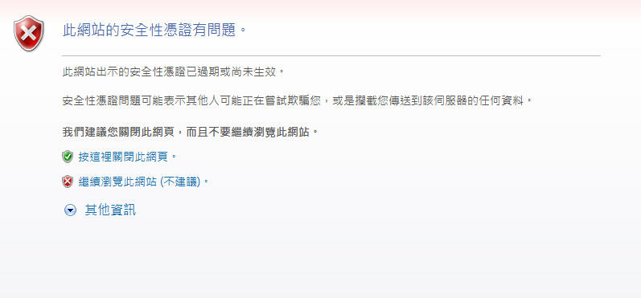

先來介紹一下 https 吧！https 就是 http 加上 SSL/TSL 協訂
為什麼要額外加上協定呢？因為單純的 http 為”明文”傳輸，意思就是傳輸的資料沒有經過加密處理，因此一旦傳輸敏感資料 (密碼，個資) 時若被截取傳輸封包 (e.g.: 區域網路) 就能看到原始資料，若加上了 SSL/TSL 協訂就可在安全的傳輸通道上交換資料
(注意！https 的加密是在傳輸層加密而非對資料本身加密)，近年來資訊安全意識提升，絕大多數的企業及政府單位網站都會使用 https 以確保資訊安全
傳輸資料不只一種方式，除了透過 http 協訂之外也可能透過 ftp，telnet 等等其他協訂傳輸資料，而這些協訂同樣是以明文傳輸，因此相對應的加上 SSL/TSL 的新協定也存在
e.g.: ftp + SSL => ftps，pop3 + SSL => pop3s
註:
SSL 是網路傳輸層的安全協訂，TSL 可視為新版的 SSL
會以 SSL/TSL 統一稱之，兩者為同一協訂在不同階段的產物
目前文字介面傳輸多以 SSH 取代 Telnet 協訂
ftps 和 sftp 是兩個不一樣的概念
ftps 為加上 SSL 的 ftp 協訂
而 sftp 為利用 ssh 實做 ftp 傳輸功能的協訂
OpenSSL 為開放原始碼的 SSL/TSL 函式庫套件
實做了 SSL 之加密功能，可製作傳輸金鑰
大概了解什麼是 https 之後就來談談加密實現的方式，https 的加密方式也就是 SSL 的加密方式，透過公鑰加密系統加密。
加密大致上可分成兩種實現方式
1. 密鑰加密(Secret-Key CryptoSystem)或稱對稱式密碼系統
2. 公鑰加密(Public-Key Cryptosystem)或稱非對稱式密碼系統
加密希望達成的目的有:
1. 不希望資料傳輸的過程中洩漏原始資料
2. 確保收送雙方的身分正確
而 “密鑰加密” 的概念可以想像成把資料用大鎖鎖住，傳送和接收兩方分別擁有 “兩支一樣的鑰匙” 適用於該大鎖 (對稱式金鑰) ，但是這種加密方式有一種潛在問題，除非一開始收送兩方均有密鑰，否則送方就得將密鑰傳送給收方，但是傳送的過程中密鑰可能會被中途竊取
公鑰加密就能減少上述情形發生，該系統產生一對公鑰 (可公開) 及私鑰 (不可公開) ，該成對的兩把鑰匙只有對方可以加 / 解密自己解 / 加密的資料
假設 A 為資料發送者，B 為資料接收者，A 利用對 B 的公鑰 Kp 加密資料，A 收到後用相對應的私鑰 Ks 解密，如此一來傳輸的過程中就不需要發送金鑰，只要能確保私鑰沒有外流，就可以保證加密資料在傳輸過程中不會洩漏原始資料。
但是公開的公鑰還是有風險，惡意的第三者可能在取得公鑰後假裝自己是該公鑰的主人發送偽造請求，因此為了判定資料發送者的身分，會在傳送的資料上加入數位簽章判定，數位簽章裡面包含了發送者的個人資訊用以證明身分，但是個人身分一樣可以偽造，因此就會透過第三方的認證機構來確保數位憑證的真實性 (Certificate Authority) (CA) ，而電子簽章也是目前電子商務能存在的基礎。
電子簽章的實做方式和公鑰加密系統正好相反，發送者透過自己的私鑰將憑證加密，這樣可以達到:
1. 任何人 (包括接收者和所有知道公鑰的第三者) 均可以驗證發送者的身分
2. 因為發送者的私鑰只有自己知道，因此沒辦法偽造簽名
3. 每次傳送中的簽名只能使用一次，因此攔截封包取得簽名並無法再次使用
接收者在收到發送者帶有電子簽章的資料後就可以向公正的第三者 (CA) 驗證該電子簽名是否已經註冊 (付錢) ，若該簽證並無向 CA 註冊，則會回傳不信任的認證。
e.g.: 瀏覽器連接網站時有時會警告使用者

註:
2015年初 chrome 和 firefox 宣布不再信任中國的數位憑證，因為中國互連網絡信息中心 (CNNIC) 濫發數位憑證，自此之後若是連上採用 CNNIC 憑證或是域名結尾為 .cn 的簡體中文會看到瀏覽器的警告訊息。
現在以 Linux (CentOs) 為例
將 Web Server (Apache) 中的 http 協訂 (80 port) + SSL 變成
https 協訂 (443 port)
目前假設已經有一個成功使用 http 的網站及 apache web server
所以從無到有架設網站的過程就不在此提及
首先安裝 OpenSSL 及 apache 的 OpenSSL interface (mod_ssl)
(以下指令有必要的話請加上 sudo)1
yum install mod_ssl openssl
(某些版本以上的 apache 可能已經預設安裝，反正結果會顯示在 terminal)
接著產生私鑰 (private key)，底下的 “路徑” 項目若留空白則預設為目前路徑
而 2048 為產生私鑰的位元長度，預設使用 RSA 加密產生1
openssl genrsa -out "路徑" "檔名".key 2048
接著利用剛剛產生的私鑰建立憑證請求檔案 (.csr)，若是想向 CA 註冊憑證就要將該檔案上傳給 CA1
openssl req -new -key "檔名".key -out "檔名".csr
產生上述檔案會要求輸入各種資料當做憑證的內容
例如國碼，省別，組織名稱等等，將這些基本資料打包成 CSR 檔案上傳至 CA 並且付款之後就成功註冊了
e.g.: 台灣網路憑證 (TWCA)
詳細網頁操作可參考此檔案
上傳之後等待 CA 審核完畢就會寄送認證檔案 (.cer or .crt) 給申請者，拿到之後就可以在 Apache 上安裝憑證，將憑證，私鑰，和憑證請求檔分別複製到以下位置
伺服器憑證檔常常為 server.cer
中繼憑證檔常常為 uca.cer
可能會拿到 uca_1 和 uca_2，合併方式可參考上面連結
1 | cp server.cer(or crt) /etc/pki/tls/certs |
註:
認證檔案 .crt 和 .cer 檔基本上可以視為一樣的東西，用於存放電子憑證，也可以互相轉換，
將上述檔案放在正確的位置之後，就可以修改 apache 底下的 ssl.conf 檔案1
vi +/SSLCertificateFile /etc/httpd/conf.d/ssl.conf
- 找到 SSLCertificateFile 這行
將憑證的路徑改為 /etc/pki/tls/certs/“檔名”.crt
2. 找到 SSLCertificateKeyFile 這行
將私鑰路徑改為 /etc/pki/tls/private/“檔名”.key
3. 找到 SSLCertificateChainFile 這行
將路徑改為 /etc/pki/tls/certs/uca.cer
4. 找到 #SSLEngine on 這行，將註解去掉開啟 SSLEngine
5. 找到 #Listen 443 這行，將註解去掉 (https 使用 443 port)
接著編輯 /etc/httpd/conf/httpd.conf1
2
3
4
5
6
7
8
9
101. 將文件中的
#LoadModule ssl_module modules/mod_ssl.so
的註解拿掉
(使用一開始安裝的 OpenSSL interface -- mod_ssl)
2. 將文件中的
#Include /etc/httpd/conf.d/*.conf
的註解拿掉
讓 apache 載入 conf.d 裡面的所有 conf 檔案的設定
當然也包含剛剛編輯的 ssl.conf
註:
apache 服務在不同的 Linux 中可能有不同的稱呼或是資料夾名稱
e.g.: 在 Ubuntu 中稱作 apache2，在 CentOs 中稱作 httpd
.conf 檔是 apache 的設定檔，httpd.conf 是最主要的設定檔，也可以在其他目錄寫客製化的其他設定檔 test.conf，然後再到 httpd.conf 中 Include 該 conf 檔案
設定完 apache 之後要確認一下防火牆 (iptable) 裡面是不是有開放 443 port1
vi /etc/sysconfig/iptables
開啟 443 port 最簡單的方式就是複製 80 port 的設定，然後把 80 改成 443 即可開放 443 port 對外連線
最後重新開啟 apache1
service httpd restart
並且在瀏覽器網址列輸入 https://"your_website_link“ 即可
(注意！若憑證檔案非 CA 所提供的，瀏覽器一樣會判定為不信任的認證，也會出現上面的安全憑證問題頁面！)
最後
可以在 apache 中加上規則強迫使用者透過 https 連線
(不然弄 ssl 就沒有意義了)，編輯 httpd.conf 檔案1
vi /etc/httpd/conf/httpd.conf
在 80 port 的 VirtualHost 中加上重新導向1
2
3<VirtualHost *:80>
Redirect permanent / https://yourWebSite/
</VirtualHost>
如此一來當使用者連結 http (80 port) 時就會被自動導向至 https 囉
如果 httpd.conf 中沒有 VirtualHost 標籤的話就自己寫吧